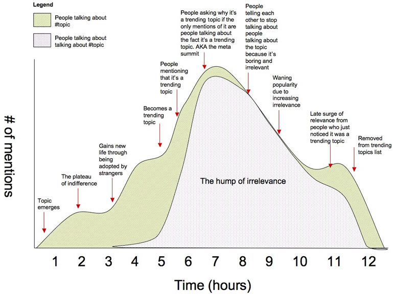
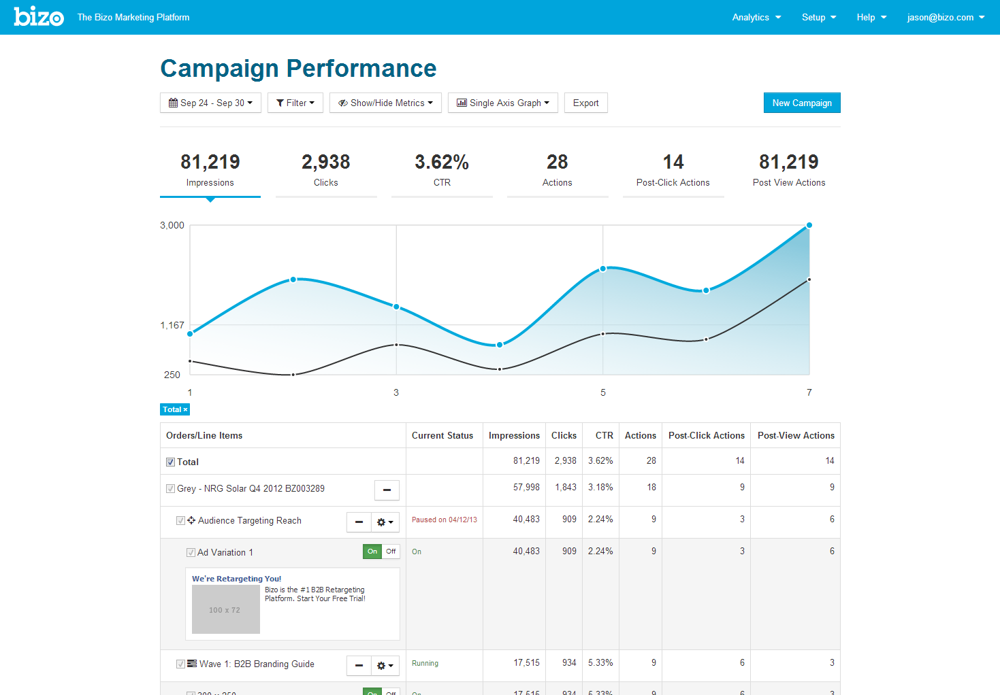
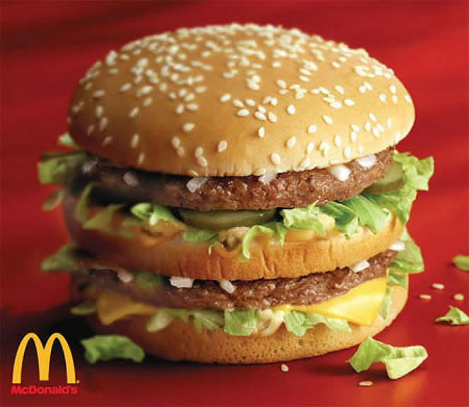
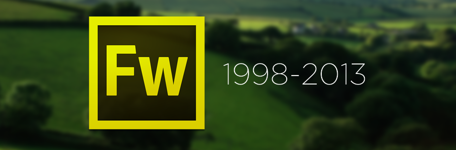

from Fireworks to Frameworks
Jason Wilkens

"designing in the browser"

O.G.

Bizonians

frameworks can help

team productivity

prototypes > mockups

consistency
don't beat yourself up

Is there still a place for these tools?
getting started
- Partner with your developers
- Choose a framework
- Fork it on GitHub
- Set up a hosted version for your whole team
- Install a local server on your machine
- Start or join a code review process
- Merge in new versions of your framework